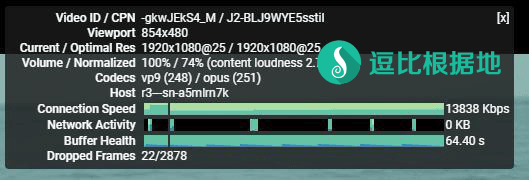
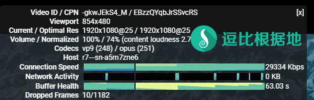

在前段时间开会期间，大量主流代理协议软件被针对、干扰、封IP等，我觉得我或许要把目光放到小众代理软件上，或许有奇效，正好昨天Brook更新了新版本，更新了新协议，我就更新了我以前写的脚本和教程，顺便试一下效果，发现速度很快（至少我这里测试效果速度比SSR快），考虑到我以前写的Brook教程都挤到最前面去了，所以我再简单介绍一下。
Brook简单介绍
Brook 是一个高效的 Socks5 代理软件，官方支持Windows、Linux、MacOS、IOS、Android、树莓派等设备，同时是使用 Golang 语言编写，安装、使用异常简单。
Brook 支持 自主研发 Brook（新版） 协议+Stream Brook（旧版）协议、Shadowsocks 协议、SOCKS5 协议、TCP/UDP 转发、SOCKS5代理转HTTP代理 等功能。
Brook 支持 UDP转发，无需任何设置。
支持单端口和多端口(每个端口可以单独设定密码)，这点类似于 Shadowsocks 和 ShadowsocksR 的单用户服务端。
Github项目：https://github.com/txthinking/brook
如何使用？
服务端 一键脚本
此脚本支持 多端口多密码方式（少量人使用或合租），支持切换新旧混淆协议。
服务端 手动教程
客户端 使用教程
客户端支持PAC（默认支持不需要任何设置，客户端会自动更新最新GFWList PAC）
速度测试
注意：以下测试仅代表我本地的情况，其他地区仅供参考。
环境为：联通运营商，同一个VPS，同一个时间（因为是错开时间测试的，会相差几分钟）
ShadowsocksR 测试
ShadowsocksR配置：aes-128-ctr / auth_aes128_md5 / tls1.2_ticket_auth

Brook 测试
Brook配置：Brook协议（就是新版协议，默认的）

转载请超链接注明：逗比根据地 » 在 主流代理软件 被针对的现在，推荐一个小众好用的代理软件 — Brook
责任声明：本站一切资源仅用作交流学习，请勿用作商业或违法行为！如造成任何后果，本站概不负责！


锐速、BBR等都是监听网卡，加速经过网卡的TCP流量，不管你用什么代理软件都一样。
/usr/local/shadowsocksr这个文件夹是否存在的，如果存在就代表已安装，如果不存在就代表未安装，cd /usr/local/shadowsocksr，看一下是否存在。所以考虑到很多人都是拿来看Youtube的，我就直接放这个好了，而且我的测速只有一点参考意义，每个人的实际效果取决于自行测试。我这个教程的目的就是为了让一些人试试Brook，或许有奇效。
另外还可以看看：Linux开放HTTP服务并下载文件到本地 以测试 VPS回程速度 这个文件是用来测试 VPS传输给你的最大速度的，同样分单线程速度和多线程速度。
还有用来测试去程/回程路由的：https://doub.io/traceroute-js1/、https://doub.io/linux-jc4/
需要命令行 CMD 运行。
假设你把
brook_windows_386.exe（或386）放到 D盘，也就是D:\brook_windows_386.exe （不要放到中文文件夹内），那么运行CMD程序，输入D:\brook_windows_386.exe --help运行后如果正常输出就继续。接下来的使用方法就是关于 代码后面的参数了，和Linux是通用的：https://doub.io/brook-jc1/#使用方法
比如：